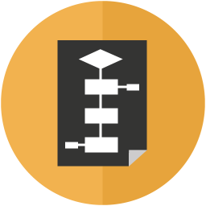
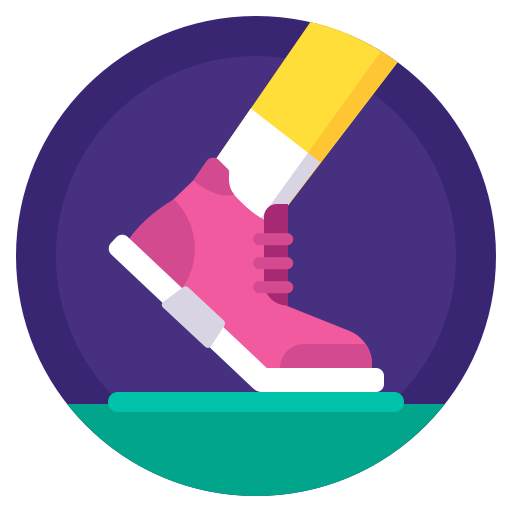
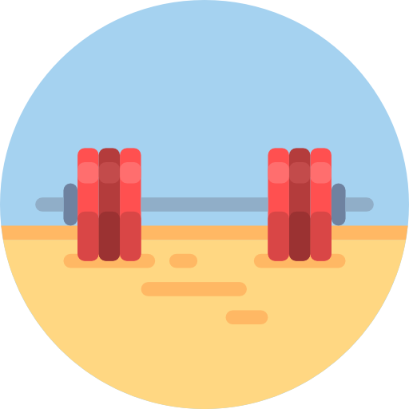

Android app that generates natural language explanations about nutritional information of food products.
I was born in Vilagarcía de Arousa, Galicia, Spain, in 1996. During my childhood, I got in touch with computers and consoles and started to feel interested in them: their architecture, how they work, what is behind programs, video games and operating systems...
Once allowed to use the home PC on my own, I began my path in computers and technology by configuring my Windows personal account, installing GNU/Linux and striving to get things done. I had my first programming experience at 15, when I decided to learn JavaScript basics (along with a bit of HTML and CSS) through a free online course. A year later, I continued programming in Python in my leisure, this time following a book.
After graduating from high school in 2014, I enrolled for a Computer Science degree at University of Santiago de Compostela. There, I learned about computers and software more deeply and completely by studying subjects related to Computer Science, Computer Architecture, Programming, System Administration, Operating Systems and Software Design and Engineering. In my last 2 years at university, I focused on web development, specially web services and REST APIs.
Now, I am a Computer Science graduate trying to build a successful career in the software development industry, preferring the Web ecosystem over Desktop and with a special interest in Back-end development.
Java, Kotlin, JavaScript, C

SpringBoot, Jersey, Node.js w/ Express.js, React.js

Android SDK, ML Kit, Espresso

Responsability, Professionalism, Teamwork
November 2019 - Present
Working as a software developer for a medium-sized consultancy from Coruña, most of the time in the back-end of projects for an important, international retailer.
- Web applications for managing specific clothing store activities.
- Internal tooling such as back office software.
July 2017 - August 2017
Internship within a healthcare systems integration project. Incidence solving activities related to communication channels of a system integration engine for heterogeneous health information systems - Mirth Connect.
- Affected channel setup revision and correction.
- Scripting for message filtering, transformation and auditory.
- Channel updates in development enviroment and preproduction versions upgrade.
Universidade de Santiago de Compostela
2014-2019
Besides my continuous study and work on the software engineering, design and development areas, I am also curious about Computer Science areas like Algorithms and Data Structures and Artificial Intelligence.
When I am not working on something, I like to spend my free time in the couch watching some TV shows or movies or playing video games; and sometimes when I succeed in overcoming sloth, I exercise by running outdoors and lifting (at least trying to) weights.
- 


- 
- 